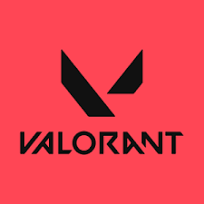

Valorant
Select A Game Down Below!
Summary
Valorant is an online multiplayer computer game, produced by Riot Games. It is a first-person shooter game, consisting of two teams of five, where one team attacks and the other defends. Players control characters known as 'agents', who all have different abilities to use during gameplay.
Valorant Gamemodes
Unrated Match
This is your standard game of VALORANT. To achieve victory, you must win 13 total rounds. The game is split into two halves of 12 rounds each, after which you’ll switch from attack to defense or defense to attack. Unrated is what you’ll play to learn the game and prepare for competitive mode. This is an excellent place to learn the maps in the current map pool, try out new angles and lineups, and try out new Agents.
Competetive Match
This is the same as an Unrated Match, but competitive. You’ll need to reach level 20 to unlock competitive matches but, after that, you can queue into them. When playing this mode you’ll first play 5 placement matches to determine your initial rank for the current act (season). After that, you’ll gain or lose Rank Rating (RR) based on whether you win or lose the match and your performance. If you do exceptionally well in a match you can earn anywhere from 20-30 RR, but the reverse is also true. If you go even, you may gain or lose around 10-15 RR. The win condition for a Competitive Match is the same as an Unrated Match, with one difference. Whereas the first team to get to 13 rounds wins in an Unrated Match, if two teams reach 12 rounds each, a Competitive Match will go into overtime mode. Once here, you will play a round of attack and a round of defense. If you win both, you’ll win the Competitive Match. If you split with the enemy team, another round of OT will commence until one team wins both rounds or players vote for a draw.
Swift Play
A new mode added in 2023, it’s most similar to an unrated match. However, as its name suggests, Swift Play is…swift. Instead of the first to 13 rounds, the game is split into two halves of 4 rounds each and it is first to 5 rounds to win. The economy in Swift Play mode is also adjusted due to the shorter length of the game. You will not need to manage your economy nearly as much as you would in an unrated match as you receive increased credits every round.The gameplay is exactly the same as an Unrated or Competitive Match, but with fewer rounds. You’ll still need to plant and defuse the spike and work with your team to win. You will likely find people playing Swift Play rounds more casually than they would in an Unrated or Competitive Match. Swift Play is also an excellent mode for quickly trying out new Agents or to get your bearings before you dive into a full match.
Spike Rush
Spike Rush is an extremely casual game mode. It is split into two halves of 3 rounds each and the first to 4 rounds wins the game. When on attack, each player is given a spike instead of just the singular spike in an Unrated, Competitive, or Swift Play match. In addition, players do not buy weapons each round. Instead, every player is given the same loadout for weapons and shields depending on the round. Players are also granted all and full charges of their abilities, except for their ultimates.Instead of ult point orbs on the map, they have all been replaced by various power-up orbs like tracker wolves, full ultimate charge, and stim pack. Because of this, Spike Rush is not taken very seriously by most players. Expect to run into people just having fun while playing this mode and trying to do the occasional stupid thing.
Deathmatch
Deathmatch is an extremely casual free-for-all game mode often used by players to warm up their shooting skills before jumping into a competitive match. Like deathmatches in many other games, VALORANT’s deathmatch is purely about the gunplay and not abilities. You will be randomly assigned an Agent and have no access to their abilities. Deathmatch pits 12 players in a first to 40 kills free-for-all match or whoever has the most kills when the game times out at 9 minutes. There is no econ management and you can choose any weapon to use, though most people will use Vandals or Phantoms, and can change your weapon after every death if you wish. Killing an enemy will immediately grant you a reload of your weapon and the enemy will drop a health pack on their corpse you can walk over to restore any missing health.
Escalation
Escalation is another casual 5v5 game mode. Teams will cycle through a series of 12 different weapons, including things like Sova’s Shock Darts and Raze’s Paint Shells, changing out weapons when different checkpoints are hit. Like Deathmatch, this is all about gunplay and no Agent abilities are granted. To win you and your team must get kills to advance to the next weapon until you get through all 12 weapons that are chosen for the match. While the team will advance through the weapons together after earning enough kills, you must get at least one kill with the current weapon to advance, regardless of what your team has accomplished. Like Deathmatch, if you kill an enemy a health pack will drop on their body that you can walk over to restore health, shields, and ammo.
Team Deathmatch
VALORANT’s newest game mode is Team Deathmatch. The 5v5 mode takes place on maps specifically designed for Team Deathmatch and is first to 100 kills or most kills after the match timer runs out. The game is split into stages where you’ll have options for your weapon loadout. You will have access to Agent abilities, but they charge over time and your ultimate ability is charged through killing enemies or picking up an ultimate orb.
Premier
Premier is VALORANT’s in-game tournament system. You’ll need a team of 5 players to compete in this mode. Once you’ve found your teammates, you need to register for the current tournament cycle by the deadline. Tournaments will run for about a month. Each weekend will have a specific map chosen for it that you’ll be able to see in advance and you can play up to 2 games per tournament weekend. You’ll then play a competitive mode game of VALORANT. Currently, when going into overtime in Premier, the first team to 12 rounds will be granted Overtime Priority where they get to choose whether they start on attack or defense in overtime. Winning the match will earn you 100 points while losing the match will earn you 25. To qualify for the tournament finals you’ll need to earn 400 points. Premier is currently in beta as of this article being published, so some details and requirements may change, however, for full information regarding the current tournament cycle or general Premier information, click this link.